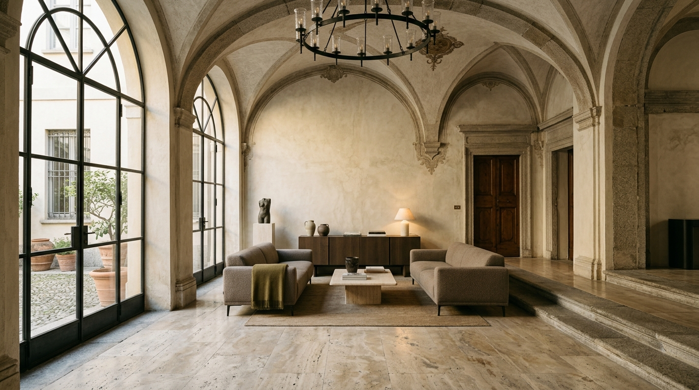

Historic Adaptive Reuse / Lombardy, Italy — 2024
Palazzo Castiglione Restoration
Assembling an 18th-century Milanese textile townhouse with tactile contemporary spatial interventions. Historic frescoes were dusted and alongside monolithic travertine baths. Divestments prioritize rustic patina over superficial luxury, confronting modern domestic life with ancient resonance.
Core Material
Tufa & Travertine
Metal Accents
Patinated Brass
Gross Footprint
1,540 m²